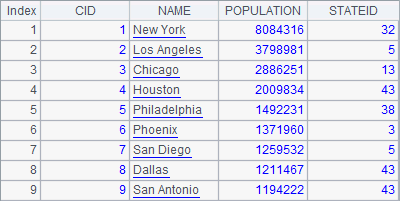
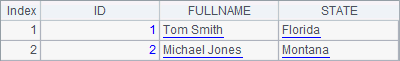

4.3.2 Commit and rollback transaction management
Whether a batch update will be successful and which record could cause an error are unpredicatable because each record update is automatically committed.This is bad for database management.
Sometimes whether a database upadate transaction should be committed or canceled depends on the current situation. db.commit() and db.rollback() functions are used to perform commit and rollback respectively.
By default, the execution of an esProc statement is committed automatically and beyond control. In order to control the transaction commitment through db.commit() and db.rollback(), @k option is added to an execute or update statement to decide which function should be used. Data validity is determined according to the error value. As the following example shows, if an error occurs during batch update, the transaction will be aborted. In this way, the database can be saved from receiving any unpredictable results:
|
|
A |
B |
|
1 |
=demo.query("select * from CITIES") |
|
|
2 |
=connect@e("DbCon") |
|
|
3 |
>A2.execute("delete from CityBak") |
|
|
4 |
>A2.update@k(A1,CityBak,ID:CID,CITY:NAME,POPULATION,STATE:STATEID) |
|
|
5 |
if A2.error()==0 |
>A2.commit() |
|
6 |
else |
>A2.rollback() |
|
7 |
=A2.query("select * from CityBak") |
|
|
8 |
>A2.update@k(A1.to(5),CityBak,ID:CID, CITY:NAME,POPULATION,STATE:STATEID) |
|
|
9 |
if A2.error()==0 |
>A2.commit() |
|
10 |
else |
>A2.rollback() |
|
11 |
=A2.query("select * from CityBak") |
|
|
12 |
>A2.close() |
|
A3 deletes data from CityBak. It commits the transaction automatically because @k option is absent in db.execute(). An error occurs in A4 when batch update is executing and shown in A5:

So the rollback operation in B6, instead of the commit operation in B5, is executed. The query result in A7 is as follows:

If there¡¯s no error during a batch update with the use of @k option, like the statement executed in A8, you can know according to the error value. Here¡¯s A9¡¯s value:

In this case, the commit operation in B9 will be executed and data will be written to the database. The query result of A11 is as follows:
